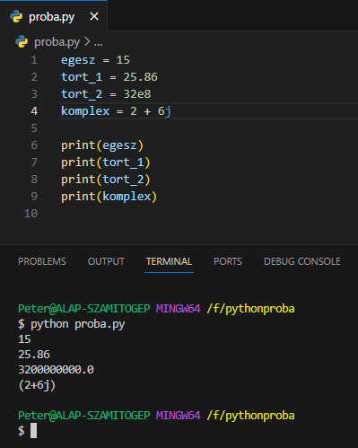
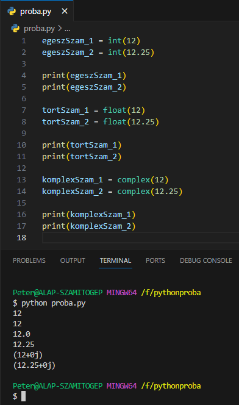

arrow_circle_up
Számok - Numbers:
-
Három számtípus létezik a Python-ban:
int,
float és
complex.

-
int: egész számok (integer)
- A pozitív és negatív egész számok és a 0.
- A számok hosszának csak a memória szab határt.
-
float: lebegő pontos számok
(float number)
- A pozitív és negatív tört számok.
-
A tizedes értékeket az egészektől ponttal választjuk
el.
- Használatos még az exponenciális jelölés is.
-
complex: komplex számok (complex number)
-
Az a + bj alakú számok,
ahol a és
b valós számok, valamint
j a komplex egységs.
-
Ami a kasztolást illeti komplex számból nem tudunk sem egész
számot, sem tört számot típuskényszeríteni. Ami a többit
illeti nézzünk néhány példát.

Véletlenszámok:
-
Véletlenszámok létrehozásához be kell
import-álni a
random modult.
Források:
w3schools/python
python.org